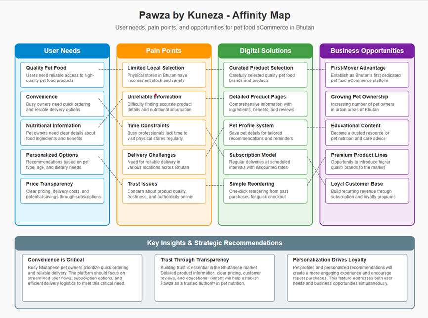

Users need a more intuitive way to filter food by pet type, breed, or age
Project Overview
Problem
Many pet owners in Bhutan struggle to find reliable, high-quality pet food locally. Physical stores often have limited stock or lack variety, and there's no dedicated online platform that caters to both dog and cat owners in a user-friendly way.
Product
Pawza is a specialized pet food eCommerce platform designed specifically for the Bhutanese market, offering curated, high-quality food options for both cats and dogs with detailed nutritional information and reliable delivery.
Goal
To create a streamlined online experience that allows pet owners to quickly find, trust, and order pet food for their dogs or cats — with delivery options, clear product information, and seamless checkout.
Research Overview
I conducted moderated user interviews with two target users: Sonam Choki, a student and cat owner, and Tenzin Wangchuk, a working professional and dog owner. Initial assumptions were that users mainly cared about price, but our findings showed they valued product quality and ease of delivery more. We learned that pet owners are frustrated with limited availability and confusing product labels in physical stores. These insights shifted our design priorities to focus on trust, clarity, and convenience.
User Persona
User Journey Map
Paper Wireframe
Low Fidelity Wireframe
Usability Findings
I conducted a moderated usability study to evaluate the user-friendliness and effectiveness of the Pawza by Kuenza eCommerce platform for ordering pet food. The study involved three participants: one cat owner and two dog owners, with varying digital experience levels. Participants were asked to complete key tasks such as browsing for pet food, reading product details, and completing the checkout process. The objective was to uncover usability pain points and understand how easily users could navigate and trust the platform.
Product detail pages lack nutritional highlights or ingredient breakdown
Reorder functionality was not discoverable enough
Affinity Diagram
Mockups
Before usability study
After usability study
High Fidelity Prototype
Site Map
Responsive Web Design
Desktop
Tablet
Mobile
Accessibility Considerations
Low-contrast elements like filter buttons and icons were difficult to identify. Increasing the contrast ratio, icon size, and adding labels (e.g., "Filter by Cat/Dog") ensures users with low vision or color blindness can effectively use all controls.
Product cards lacked alt text and descriptive labels. Ensuring all product images and buttons include meaningful alt text and ARIA labels supports users who rely on screen readers for navigation.
Confusion during checkout flow transitions was noted. Adding clear, sequential progress indicators (e.g., Cart > Delivery > Payment > Confirmation) and real-time feedback (like "Order placed successfully") helps users with cognitive or memory impairments stay oriented.
Takeaway
Impact: Pawza by Kuenza reimagines how pet owners in Bhutan access high-quality pet food, offering a seamless, trustworthy, and pet-focused eCommerce experience.
By enabling busy cat and dog owners to easily browse, trust, and purchase nutrition-specific pet food, the platform fills a crucial gap in Bhutan's pet care market—one where physical stores often fall short.
What I Learned
Way Forward: Designing Pawza by Kuenza helped me understand the unique challenges and emotional needs of pet owners—particularly the deep sense of care they hold for their pets' well-being. It reinforced the importance of empathetic design and local context, especially when building for a community with limited access to reliable pet care resources.
Through this project, I also saw how critical clarity, trust signals, and streamlined navigation are in encouraging purchase decisions on first-time platforms.
Host a design feedback session with pet owners to gain actionable insights on usability and content.
Conduct a second round of usability testing to confirm that key user pain points (like limited product information or trust in delivery) are being addressed effectively.
Continue iterating on the shopping experience—exploring features like subscription ordering, pet profiles for personalization, and better product comparison tools based on user feedback.